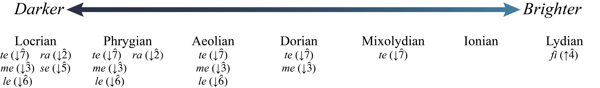

自然音调式与半音阶导论¶
要点
- 自然音调式（diatonic modes）是类似音阶的音集，具有不同的半音与全音模式。
- 调式可以在一个调式明暗的连续谱系中描述：较明亮的调式听起来更像大调音阶，而较暗淡的调式听起来更像小调音阶。
- 三个明亮的调式含有 mi（\(\hat{3}\)，主音上方大三度），它们是利底亚（lydian）、伊奥尼亚（ionian）和混合利底亚（mixolydian）。
- 四个暗淡的调式含有 me（\(\downarrow\hat{3}\)，主音上方小三度），它们是多利亚（dorian）、爱奥利亚（aeolian）、弗里吉亚（phrygian）和罗克里亚（locrian）。
- 半音阶由十二个相邻的半音组成。半音阶常常（但并非总是）在上行时用升号记写，在下行时用降号记写。
本书从许多不同角度讨论调式。关于调式的更多信息，见和弦—音阶理论（爵士）、调式图式（流行）、自然音调式（20/21 世纪）以及用调式、音阶与音集分析（20/21 世纪）。本书还在音集中更深入地讨论了五声音集。
调式与同主音关系¶
自然音调式是类似音阶的音集，具有不同的半音与全音模式。如我们此前所学，共用主音的音阶之间具有同主音关系。在这一章中，我们将用同主音关系来描述各调式。我们还会在调式明暗的连续谱系中描述调式：较明亮的调式听起来更像大调音阶，而较暗淡的调式听起来更像小调音阶。
谱例 1 按相对明暗排列了七种自然音调式。它还总结了相对于伊奥尼亚（大调）调式而言，哪些音阶级数发生了变化，其细节将在下文中解释。

谱例 1. 调式的相对明暗。最明亮的调式是利底亚调式。这一调式上行的半音与全音模式是 W‑W‑W‑H‑W‑W‑H。也可以把它看成升高了 \(\hat{4}\) 的大调音阶，\(\hat{4}\) 的视唱唱名是 fi（\(\uparrow\hat{4}\)）。谱例 2 展示了带视唱唱名的 C 利底亚。
谱例 2. 带视唱唱名的 C 利底亚。
次明亮的调式是伊奥尼亚调式。这一调式上行半音与全音的模式与大调音阶相同：W–W–H–W–W–W–H。谱例 3 展示了带视唱唱名的 C 伊奥尼亚。
谱例 3. 带视唱唱名的 C 伊奥尼亚。
再下一个明亮的调式是混合利底亚调式，其上行半音与全音模式为 W–W–H–W–W–H–W。也可以把它看成降低了 \(\hat{7}\) 的大调音阶。谱例 4 展示了带视唱唱名的 C 混合利底亚。
谱例 4. 带视唱唱名的 C 混合利底亚。
利底亚、伊奥尼亚和混合利底亚通常被视为较明亮（或更接近大调）的调式，因为它们含有 mi 而不是 me（未改变的 \(\hat{3}\) 而非降低的 \(\hat{3}\)）。多利亚、爱奥利亚、弗里吉亚和罗克里亚通常被视为较暗淡（或更接近小调）的调式，因为它们含有 me 而不是 mi（\(\downarrow\hat{3}\) 而非未改变的 \(\hat{3}\)）。
多利亚调式是第一个较暗淡（或更接近小调）的调式。这一调式上行的半音与全音模式是 W–H–W–W–W–H–W。也可以把它看成升高了 \(\hat{6}\)（la）的小调音阶。谱例 5 展示了带视唱唱名的 C 多利亚：
谱例 5. 带视唱唱名的 C 多利亚。
下一个较暗淡的调式是爱奥利亚调式。爱奥利亚调式上行的半音与全音模式和自然小调音阶相同：W–H–W–W–H–W–W。谱例 6 展示了带视唱唱名的 C 爱奥利亚。
谱例 6. 带视唱唱名的 C 爱奥利亚。
再下一个较暗淡的调式是弗里吉亚调式。弗里吉亚调式上行的半音与全音模式是 H–W–W–W–H–W–W。它与自然小调音阶的模式相同，但降低了 \(\hat{2}\)，\(\hat{2}\) 的视唱唱名是 ra。谱例 7 展示了带视唱唱名的 C 弗里吉亚：
谱例 7. 带视唱唱名的 C 弗里吉亚。
最暗淡的调式是罗克里亚调式。罗克里亚调式上行的半音与全音模式是 H–W–W–H–W–W–W。它与自然小调音阶的模式相同，但降低了 \(\hat{2}\)（ra）并降低了 \(\hat{5}\)——\(\hat{5}\) 的视唱唱名是 se。谱例 8 展示了带视唱唱名的 C 罗克里亚：
谱例 8. 带视唱唱名的 C 罗克里亚。
每个调式都可以从任何音开始。例如，可以从 D♭ 开始构成一个混合利底亚音集，从 G♭ 开始构成一个爱奥利亚音集，或从 F♯ 开始构成一个利底亚音集。在写作调式音集时，务必仔细考虑变音记号。
谱例 9 展示了所有不同调式的音阶级数与视唱唱名，按由明到暗（利底亚到罗克里亚）排列：
谱例 9. 从 C 开始、由明到暗排列的各调式及其音阶级数。
仔细听谱例 9，观察各调式之间的差别。
五声音集¶
除了各调式之外，还有其他自然音音集。其中之一是五声音集（pentatonic collection）。这一五音音集使用音程序列大二度–大二度–小三度–大二度–小三度。它正好对应钢琴的黑键（谱例 10a），但可以从任何音开始（例如，谱例 10b 含有一个 D 五声音集）。也可以用视唱唱名来理解大调五声音集：do、re、mi、sol、la 和 do。用音阶级数来说，五声音阶的音级通常与大调音阶相联系，但省略了 \(\hat4\) 和 \(\hat7\)：\(\hat1-\hat2-\hat3-\hat5-\hat6\)。
谱例 10. 一个带视唱唱名的大调五声音集，其后是一个小调五声音集。
你可以通过记住这些音集的视唱唱名模式，并把它们与从同一音开始的大调音阶相联系，来拼写这些音集。例如，如果你想拼写一个降 B 大调五声音集，你会先想到降 B 大调音阶，然后写出 do、re、mi、sol、la 和 do（\(\hat1-\hat2-\hat3-\hat5-\hat6-\hat1\)）：B♭–C–D–F–G–B♭。
半音阶¶
半音阶由十二个相邻的半音组成。1 谱例 11 展示了三个半音阶：第一个从 C 开始，第二和第三个带有调号（A 和降 E）：
谱例 11. 从 A 和降 E 开始的两个半音阶。
如你在谱例 11 中所见，半音阶常常（但并非总是）在上行时用升号记写，在下行时用降号（和/或还原号）记写。以降号音开头的半音阶（如谱例 11 的第三行）通常在上行时用还原号/升号，在下行时用降号。写作半音阶时，不要忘记键盘上有两对白键之间是半音：B/C 和 E/F。谱例 11 还引入了四个新的视唱唱名音节：di（升高的 do）、ri（升高的 re）、si（升高的 sol）和 li（升高的 la）。一般来说，升高的视唱唱名音节以 -i 元音结尾，降低的音节以 -e 结尾（ra 是例外）。
延伸阅读
- Day-O’Connell, Jeremy. 2001. “Pentatonic.” Grove Music Online. https://doi.org/10.1093/gmo/9781561592630.article.21263.
- Dyson, George, revised by William Drabkin. “Chromatic.” Grove Music Online. https://doi.org/10.1093/gmo/9781561592630.article.05718.
- McGrain, Mark. 1986. Music Notation. Boston: Berklee Press.
- Palmer, Willard A. et al. 1994. The Complete Book of Scales, Chords, Arpeggios & Cadences. Van Nuys, CA: Alfred Publishing.
- Powers, Harold S. et al. 2001. “Mode.” Grove Music Online.https://doi.org/10.1093/gmo/9781561592630.article.43718.
- Rechberger, Herman. Scales and Modes around the World. 2008. Finland: Fennica-Gehrman.
- Roemer, Clinton. 1985. The Art of Music Copying: The Preparation of Music for Performance, 2nd edition. Sherman Oaks: Roerick Music Company.
在线资源
- 调式概览与历史（Classic FM）
- 从关系视角理解调式（Learning Music）
- 调式教程与测验（musictheoryfundamentals.com）
- 调式识别测验（music-theory-practice.com）
-
网络作业
- 写作调式，第 3 页（.pdf），从关系视角写作（.pdf）
- 多利亚，第 1 页；利底亚，第 3 页（.pdf）
- 调式识别（.pdf，.pdf），第 2、4 页（.pdf）
- 写作大调五声音集（.pdf）
- 写作半音阶与调式，第 1 页；五声音集，第 3 页（.pdf）
- 写作半音阶（.pdf%20JAZZ/3)%20THEORY/05)%20Accidentals/10)%20chromatic%20scale%2037.pdf)）及第 1 页（.pdf）
作业
-
自然音调式 A。要求学生在调号之内和之外写作自然音调式。
-
半音阶 A。要求学生在调性语境之内和之外写作半音阶。
-
半音阶 B。要求学生在调性语境之内和之外写作半音阶。
媒体署名¶
- Brightness and Darkness of Modes © Nathaniel Mitchell，依据 CC BY-SA（署名—相同方式共享） 许可协议授权
-
由于半音阶缺乏大调或小调音阶那样的功能性，音乐理论家有时把半音阶视为一个音集。 ↩